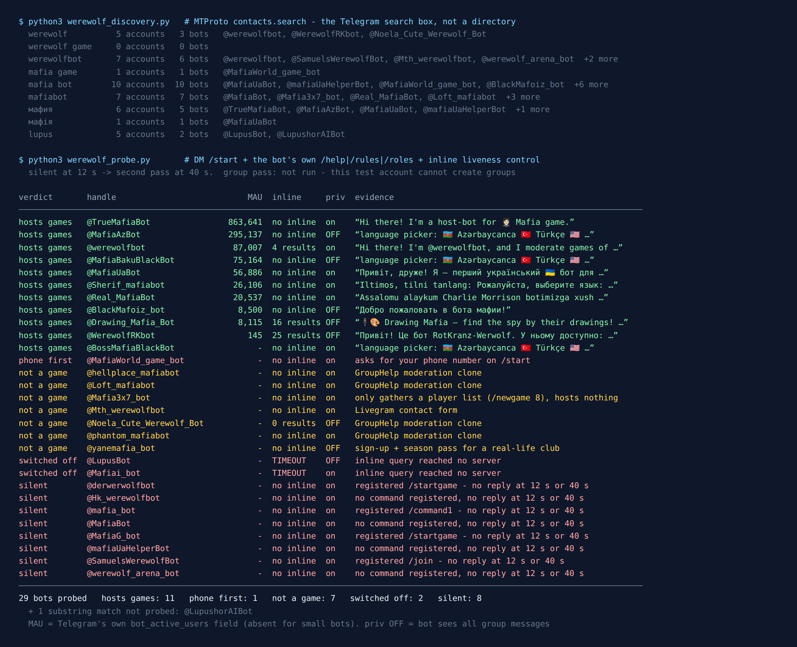

Telegram Mafia Bot: 29 Tested, One Has 863,641 Players
Mafia is the game group chats were invented for. Someone is lying, everyone is typing, and the night phase happens in private messages. Unlike Never Have I Ever, it really does need a bot: somebody has to hand out secret roles, collect the night actions and count the votes, and that somebody cannot be a player.
So Telegram is full of them. On 15 September 2026 I asked Telegram’s own search which Mafia and Werewolf bots exist, messaged every one it returned, and read a number Telegram attaches to each bot that almost nobody looks at: how many people used it in the last month.
29 bots came back. 11 host the game. One of them has 863,641 monthly users. The other 18 are the more useful half of this article: four are group-moderation bots wearing a Mafia name, one asks for your phone number before it says hello, three are something else entirely, and ten never answered.

How the list was built
Directory sites are a poor source for a test like this. An entry outlives the bot behind it by years, so a directory mostly tells you which bots once existed. I have run into that on Truth or Dare bots and general game bots, where a large share of the recommended handles no longer answered.
This time the list came from the platform. The Telegram search box runs an API method called contacts.search, which Telegram documents as returning “users found by username substring” (core.telegram.org). I fixed nine queries before measuring anything: werewolf, werewolf game, werewolfbot, mafia game, mafia bot, mafiabot, both Cyrillic spellings of Mafia (Russian мафия and Ukrainian мафія), and lupus. The Cyrillic ones are there because the game was created in 1986 by Dmitry Davidoff at Moscow State University and its biggest Telegram audience still writes in Cyrillic.
Together they returned 30 distinct bot accounts. One, @LupushorAIBot, matched “lupus” by accident and is an AI coding assistant, so I recorded it and left it alone. The other 29 got the same treatment:
/startin a private chat, with twelve seconds to reply.- The bot’s own help, rules or roles command, taken from the command list it registered with Telegram, never guessed.
- An inline query as a liveness check. Telegram forwards it to the bot’s server and waits, so a running server answers and a stopped one times out.
- Anything silent got a second pass at 40 seconds before “silent” counted as a verdict.
What I did not do is play a game, and it is worth saying that up front. Mafia needs a group, my test account is not allowed to create one, and I was not going to add 29 strangers’ bots to someone else’s chat. So “hosts games” below means the bot is running and describes a working game. It does not mean I sat through a round.
The number Telegram publishes that listicles never quote
Every bot account on Telegram carries a set of flags, and one of them is described in the API schema as “Monthly Active Users (MAU) of this bot (may be absent for small bots)” (core.telegram.org/constructor/user). Telegram fills it in. The bot owner cannot type a flattering figure into it. Ten of the 29 had it:
| Bot | Monthly users | Language of the game |
|---|---|---|
@TrueMafiaBot | 863,641 | Russian and English (answered me in English) |
@MafiaAzBot | 295,137 | Azerbaijani, Turkish, English, Russian |
@werewolfbot | 87,007 | English first, many languages |
@MafiaBakuBlackBot | 75,164 | Azerbaijani, Turkish, English, Russian |
@MafiaUaBot | 56,886 | Ukrainian |
@Sherif_mafiabot | 26,106 | Uzbek, Russian, English, Arabic |
@Real_MafiaBot | 20,537 | Uzbek, Russian, English, Kazakh |
@BlackMafoiz_bot | 8,500 | Russian |
@Drawing_Mafia_Bot | 8,115 | English and others (a drawing variant) |
@WerewolfRKbot | 145 | Ukrainian |
All ten are hosts that answered. Not one of the 18 non-hosts had the field. That tracks with the “may be absent for small bots” wording, but it also makes MAU the quickest filter you have: if Telegram reports a monthly user count for a Mafia bot, it is at least a real product with real players.
One cross-check is possible. The Werewolf bot’s own website claims “15.000 daily active users” (tgwerewolf.com). Telegram says 87,007 monthly. Those two numbers are compatible for a game people play a few evenings a month, and that is rarer than it should be: a bot’s marketing and the platform’s own counter agreeing.
The ones I would try first
@werewolfbot if your group speaks English. It opened with “Hi there! I’m @werewolfbot, and I moderate games of Werewolf”, points you to /grouplist for public groups and /rolelist for the roles, and its inline mode returned stats commands, so the server behind it is up. It is also the only one in the set that is open source: the code is public under GPL-3.0 at GreyWolfDev/Werewolf, with the last push on 19 July 2026. Its description asks every player to “use /start to register yourself for PMs from the bot (required!)”. That is not a formality: roles arrive by private message, so a player who skipped it has no role to play.
@TrueMafiaBot for classic Mafia. The largest by a distance. It replied “I’m a host-bot for Mafia game” in English, with buttons to add it to a chat, enter a public game, switch language and open a profile. Two things to know. Its description says that starting the bot means you accept a licence agreement hosted on its Russian domain, so read that if it matters to you. And big public bots like this also run open lobbies, which is fine for strangers and not what you want for a private evening.
@MafiaUaBot for a Ukrainian-speaking group. It calls itself the first Ukrainian bot for Mafia, has 56,886 monthly users and answered /help with a full command list: /game, /extend, /next, /stop and so on. It also said the thing every host bot in this category needs, more plainly than the others: “this is a bot for playing Mafia and it needs administrator rights”. More on that below, because it changes the privacy picture.
@Drawing_Mafia_Bot if your group is small. It is not strictly Mafia. Everyone gets a word to draw except one spy, who has to fake it by watching. It needs three players rather than six, its rules came back in English on /rules, and its inline mode returned sixteen results including other mini-games. A good fit for the nights when Mafia’s head count is not there.
The Azerbaijani and Uzbek bots (@MafiaAzBot, @MafiaBakuBlackBot, @Sherif_mafiabot, @Real_MafiaBot) all answered with a language picker that includes English, and between them they have over 400,000 monthly users. One caution on @Real_MafiaBot: its description advertises that money collected in the game can be transferred. A party game with transferable balances is closer to a wallet than a card game, and I would keep it away from a group with teenagers in it.
Not six people online tonight?
Mafia falls apart below six players. The free Party Game runs inside Telegram with no bot to add to your group: Never Have I Ever, Would You Rather, Truth or Dare and quiz rounds, from two players up.
Open the Party Game No Telegram? It runs in a browser too: charliemorrison.dev/party-gameA Mafia name is not a Mafia bot
This is where the search box is less honest than it looks. Of the 18 bots that do not host games:
- Four are the same moderation bot.
@Loft_mafiabot,@phantom_mafiabot,@hellplace_mafiabotand@Noela_Cute_Werewolf_Botall answered with an identical message: “GroupHelpBot is the most complete Bot to help you manage your groups easily and safely! Add me in a Supergroup and promote me as Admin to let me get in action!” These are clones of a group-management bot, most likely set up by admins of particular Mafia communities. They are not games, and the only thing they ask of you is admin rights. - One wants your phone number first.
@MafiaWorld_game_bot, display name “Mafia Bot”, answered/startwith “Share your phone number or enter it manually” and, when my next message was not a number, “The number entered is incorrect”. No game, no rules, no description. A game has no reason to need your number. I did not give it one, and I would not. - One is a contact form.
@Mth_werewolfbotreplied “You can contact us using this bot. This bot was made using @LivegramBot”. A mailbox for a Werewolf community, not a moderator. - Two do not run the game.
@Mafia3x7_botonly collects a list of players (“/newgame 8 — start collecting 8 people”) and leaves the hosting to someone else.@yanemafia_botis the sign-up desk for a real-life Mafia club, complete with a season pass: useful if you want a table and a host in a room, not a game in a chat.
The remaining ten sent nothing. Two of them, @LupusBot and @Mafiai_bot, are probably switched off: they were silent in private and Telegram forwarded an inline query to each without an answer. (An earlier version of this article called that proof. It is not: a day later, four working Crocodile bots answered private messages and still timed out on the same inline test.) The other eight never enabled inline mode, so all I can report is silence at twelve seconds and again at forty. They include the best handles in the whole set. @MafiaBot and @mafia_bot sent nothing; the second one’s entire description, in Persian, is a contact “for purchase”, which reads like a username waiting for a buyer. @MafiaG_bot describes itself as Iran’s first dedicated group Mafia bot and registered a proper command list (/startgame, /players, two voting commands), then answered neither /start nor /help. @derwerwolfbot, @SamuelsWerewolfBot, @werewolf_arena_bot, @Hk_werewolfbot and @mafiaUaHelperBot make up the rest. A dead bot keeps its name, picture and command menu, so from the chat window none of them looks any different from a bot that is thinking.
Why a Mafia bot asks for admin, and what that means for your chat
The classic rules say the dead do not talk and nobody talks at night. A bot can only enforce that by deleting messages or muting players, and Telegram only lets a bot do either as an administrator. The Bot API is explicit: “If the bot is an administrator of a group, it can delete any message there”, and restricting a member requires that “the bot must be an administrator in the supergroup” (core.telegram.org/bots/api). @MafiaAzBot’s description puts it as an instruction: add the bot to a group, make it an admin, type /game.
Here is the part that matters for privacy. Telegram bots normally run in privacy mode, where in a group they receive only commands and replies addressed to them. Telegram publishes a flag for bots that switched it off (“Can the bot see all messages in groups?”), and eight of the 29 have it off, including @MafiaAzBot and @BlackMafoiz_bot. But the flag stops meaning anything once you promote a bot. Telegram’s own documentation says privacy mode is “enabled by default for all bots, except bots that were added to a group as admins (bot admins always receive all messages)” (core.telegram.org/bots/features).
So a Mafia host bot, used the way it asks to be used, receives every message in the group. That is not sinister; it is how the game works. It is a good reason not to add one to the family chat or the work chat you already have. Make a group for game night, add the bot there, and keep your normal conversation where a stranger’s server cannot read it.
How I would pick one tonight
- Prefer a bot with a monthly user count. Every bot in this test that carried one was a working host. None of the non-hosts carried one.
- Send
/startin private and wait fifteen seconds. The ten that failed here did not wake up at forty. - Leave if the first thing it wants is your phone number. A Mafia host needs your name in the chat, not your number.
- Read the first reply for “GroupHelp” or “Livegram”. Either one means you found a moderation tool or a mailbox with a game’s name on it.
- Give admin only in a group made for games. An admin bot sees everything, whatever its privacy flag says.
- Have everyone press
/startin private before the first round. Roles arrive by private message, and@werewolfbotmarks that step as required.
If you are planning the whole evening rather than picking a bot, the game night guide covers the chat mechanics that break first, and the party games list has games that need no bot at all.
For the rounds before everyone arrives
The Telegram Party Pack is 255 group-chat prompts — 45 Never Have I Ever statements, 30 Would You Rather dilemmas, 110 Truth or Dare — as copy-paste text and ready-made poll blocks. It does not include Mafia; it is what keeps the chat going while you wait for six people, with no bot to add and nothing reading the room.
Get the pack — $9.99 Or look for the games that need no bot in the Never Have I Ever test.What I could not test, said plainly
No round was played. Everything above is what the bots said about themselves in private, what Telegram’s flags say, and whether the server answered. A host bot can answer /start perfectly and still freeze on night three. @MafiaBakuBlackBot’s description more or less admits the category has that problem: it sells itself as the version where “freezes do not happen”.
Silent is not dead. A bot with inline mode switched off gives me no second test, so a silent one might be a group-only bot that ignores private chats on purpose. The two whose inline query also timed out are the likeliest to be switched off, but an inline timeout on its own is not proof.
MAU is Telegram’s count, not a quality score. It tells you people use a bot. It does not tell you they enjoy it, and the biggest public bots are big partly because they run open lobbies for strangers.
The date at the top is there for a reason. Fifteen seconds of /start beats any list, this one included.